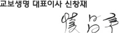

HOME > 재단소개 > 출연기업소개
HOME > 재단소개 > 출연기업소개
출연기업 소개
좋은 성장으로 존경받는 100년 기업의 미래를 열어가겠습니다.
교보생명은 1958년 창립 이래 지난 50여 년 동안 생명보험 한길을 걸어오며 보험업계를 선도해왔습니다. 또한 고객중심, 정직과 성실,도전과 창의라는 핵심가치의 바탕 위에투명경영과 윤리경영을 일관되게 실천하며 고객의 신뢰를 쌓아왔습니다.
교보생명은 저를 포함한 임직원 모두가 한 마음으로 변화혁신에 참여해 고객 중심의 기업문화를 정착시키고, 재무안정성과 리스크 관리능력이 뛰어난 회사로 거듭나고 있습니다. 이러한 노력의 결과로 지난 2009년에는 ‘아시아 최고 생명보험사상’을 수상했으며,2012년에는 제가 교보생명을 대표하여 ‘올해의 아시아 최고 보험경영자’에 선정되는 영예를 안기도 했습니다.
고객보장을 최고로 잘하는 회사가 되겠습니다.
교보생명의 새로운 비전은 ‘고객보장을 최고로 잘 하는 회사(고객 보장 No.1)’가 되는 것입니다. 고객이 진정으로 바라는 보장가치를 제공하기 위해 고객보장서비스를 획기적으로 향상 시키겠습니다. 고객 한 분 한 분을 직접 찾아 뵙는 ‘평생든든서비스’는 이러한 노력의 하나입니다.
교보생명은 또한 생명보험의 본질적 가치 창출에 집중해 고객들이 미래의 역경으로 인해 좌절하지 않고 소중한 꿈을 이어갈 수 있도록 적극 돕겠습니다. 더 좋은 상품과 서비스를 제공하고, 투명하고 윤리적인 경영으로 기업가치를 더욱 높여 나가겠습니다.
모든 이해관계자들과 공동 발전하는 ‘좋은 성장’을 위해 노력하겠습니다.
교보생명은 모든 이해관계자와 함께 지속적으로 발전하는 기업이 되고자 합니다. 고객, 임직원, 투자자,지역사회 등 모든 이해관계자 들과 공동 발전하는 ‘좋은 성장’을 통해 ‘존경 받는 100년기업’으로성장할 수 있도록 최선의 노력을 다하겠습니다.
그 동안 한결같이 교보생명을 성원해 주신 것과 같이 미래에도 변함없는 관심과 격려 부탁 드립니다. 감사합니다.